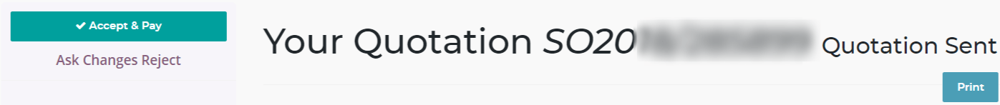

In this section of the portal you will find all the communications between you and Odoo, documents such Quotations, Sales Orders, Invoices and your Subscriptions.
Note
To access this section you have to log with your username and password to Odoo . If you are already logged-in just click on your name on the top-right corner and select "My Account".
Quotations
Here you will find all the quotations sent to you by Odoo. For example, a quotation can be generated for you after adding an Application or a User to your database or if your contract has to be renewed.
The Valid Until column shows until when the quotation is valid; after that date the quotation will be "Expired". By clicking on the quotation you will see all the details of the offer, the pricing and other useful information.
If you want to accept the quotation just click "Accept & Pay" and the quote will get confirmed. If you don't want to accept it, or you need to ask for some modifications, click on "Ask Changes Reject".
Sales Orders
All your purchases within Odoo such as Upsells, Themes, Applications, etc. will be registered under this section.
By clicking on the sale order you can review the details of the products purchased and process the payment.
Invoices
All the invoices of your subscription(s), or generated by a sales order, will be shown in this section. The tag before the Amount Due will indicate you if the invoice has been paid.
Just click on the Invoice if you wish to see more information, pay the invoice or download a PDF version of the document.
Tickets
When you submit a ticket through Odoo Support a ticket will be created. Here you can find all the tickets that you have opened, the conversation between you and our Agents, the Status of the ticket and the ID (# Ref).
Subscriptions
You can access to your Subscription with Odoo from this section. The first page shows you the subscriptions that you have and their status.
By clicking on the Subscription you will access to all the details regarding your plan: this includes the number of applications purchased, the billing information and the payment method.
To change the payment method click on "Change Payment Method" and enter the new credit card details.
If you want to remove the credit cards saved, you can do it by clicking on "Manage you payment methods" at the bottom of the page. Click then on "Delete" to delete the payment method.
Warning
At the date of the next invoice, if there is no payment information provided or if your credit card has expired, the status of your subscription will change to "To Renew". You will then have 7 days to provide a valid method of payment. After this delay, the subscription will be closed and you will no longer be able to access the database.
Success Packs
With a Success Pack/Partner Success Pack, you are assigned an expert to provide unique personalized assistance to help you customize your solution and optimize your workflows as part of your initial implementation. These hours never expire allowing you to utilize them whenever you need support.
See also
If you need information about how to manage your database see Online Database management